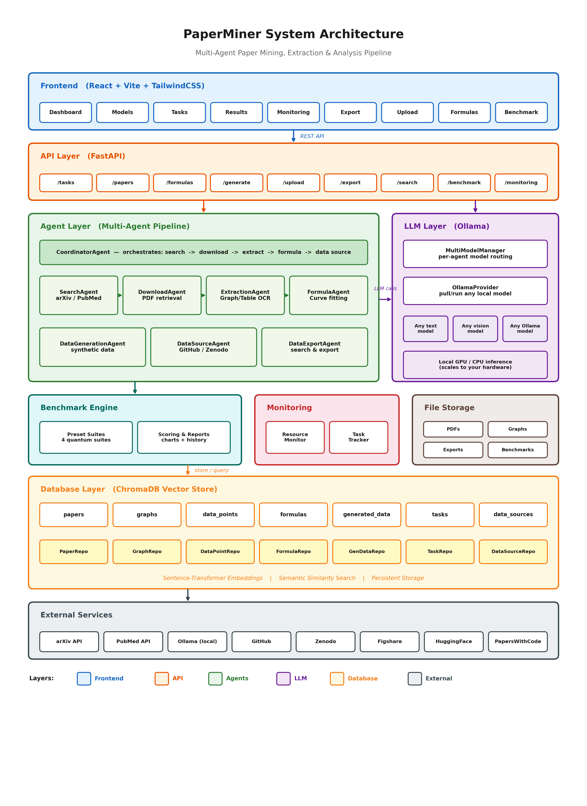
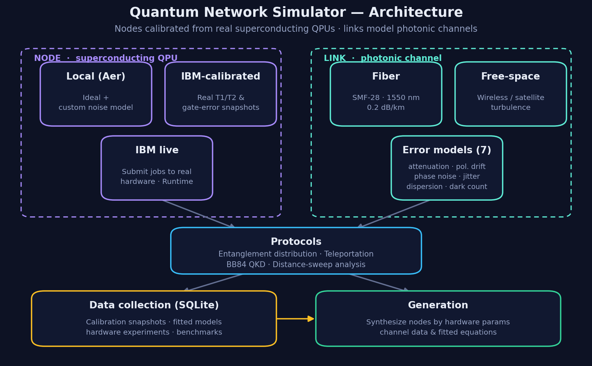
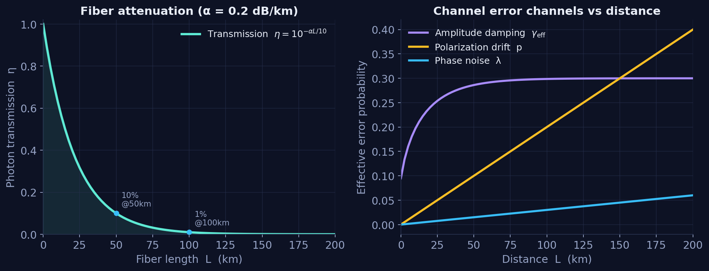
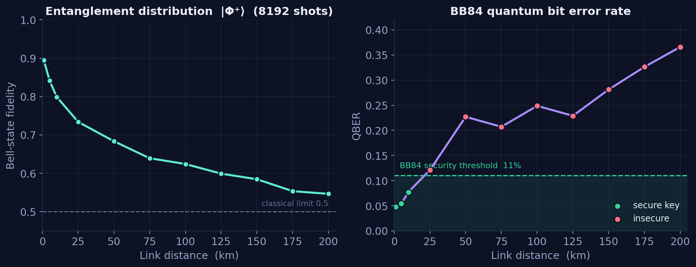
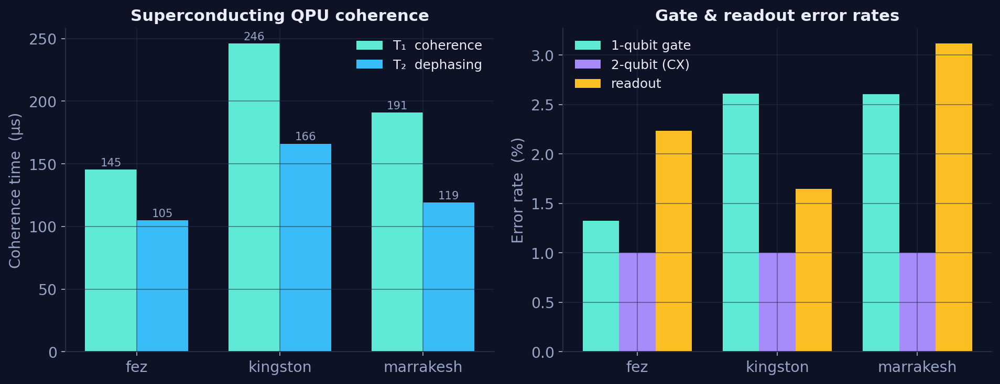

This framework integrates three components: a systematic literature survey of quantum networks, QuantumPaperMiner for the collection and generation of quantum data and equations, and a quantum network simulator for modelling network nodes and links spanning superconducting hardware and photonic channels.
The research foundation: a systematic survey of quantum-network protocols, hardware, and the taxonomy of error types upon which the remaining components are built.
A multi-agent system that extracts graphs, data points, and equations from the literature, and subsequently generates additional data, reports, and metadata.
Models network nodes (calibrated from real superconducting QPUs) and links (photonic fiber / wireless channels), with collected data and fitted equations.
Two subsystems populate the quantum-network knowledge base: a data collection and generation subsystem (QuantumPaperMiner) and a simulation subsystem (nodes and links), both grounded in the survey research.
Converting the literature into structured, reusable quantum data
Physical-network modelling: nodes and the links between them
Both subsystems are anchored by the quantum network survey; its protocol and error-type taxonomy defines what is collected, generated, and simulated.
A fully-local, multi-agent system that converts quantum-science papers into structured graphs, data points, and equations, and generates additional data from them, using local LLMs via Ollama.

Eight specialized agents search arXiv / PubMed, retrieve PDFs, and interpret figures with any vision-capable Ollama model to recover the underlying numerical data.
Extracted data is fitted to curves (linear, power, exponential, polynomial, log, trig) and validated with R² / RMSE.
Produces synthetic data points, analysis reports, and metadata from extracted or user-uploaded equations.
Everything is embedded into a local ChromaDB vector store — no API keys, no documents ever leaving your machine.
arXiv & PubMed discovery with LLM-ranked relevance and concurrent PDF download.
Any vision-capable Ollama model reads graphs & tables and recovers data points.
Curve fitting with R² / RMSE validation and clear data provenance.
Interpolation, extrapolation, and dense sampling from any equation.
Semantic search across papers, graphs, data points, and equations.
Preset quantum-science suites score search relevance and extraction quality.
A two-node-and-beyond quantum network built on Qiskit, with custom error models for long-distance communication. Nodes are calibrated from real superconducting hardware; links model photonic fiber / wireless channels.
Three backend modes: pure local Aer, IBM-calibrated (driven by real T1/T2 & gate-error snapshots), and live IBM hardware submission.
Each link carries its own distance-dependent channel error model for fiber or free-space transmission.
Seven physical error types: fiber attenuation, polarization drift, phase noise, timing jitter, dark counts, environmental decoherence, chromatic dispersion.
Entanglement distribution, quantum teleportation, BB84 QKD, and distance-sweep fidelity analysis.
Heron-class superconducting QPUs.
Distance-dependent noise models.
With a Flask data dashboard.
Calibration history survives restarts.

Every link error is a physically-motivated quantum channel whose strength scales with distance, temperature, and hardware parameters. These are the exact models implemented in the simulator.
α = 0.2 dB/km, η_det = 0.9.r = 0.002 /km.κ = 10⁻⁶ /(K·km), T = 300 K.τⱼ = 50 ns.


| Backend | Qubits | T₁ (µs) | T₂ (µs) | 1-qubit err | 2-qubit (CX) err | Readout err |
|---|---|---|---|---|---|---|
| ibm_fez | 156 | 145.4 | 104.9 | 1.32% | 1.00% | 2.23% |
| ibm_kingston | 156 | 246.0 | 165.9 | 2.61% | 1.00% | 1.65% |
| ibm_marrakesh | 156 | 190.8 | 119.0 | 2.61% | 1.00% | 3.12% |
Data collected across both subsystems: extracted from the literature and captured from quantum hardware, stored locally for subsequent analysis.
Stored in a local ChromaDB vector store (mining) and a SQLite data store (simulator). Snapshot from the development environment.
Each component is maintained in its own repository. The application repositories are private; this site serves as the public overview of the project.
The quantum-network literature survey and error-type taxonomy that anchors the framework.
Private repositoryMulti-agent paper mining, equation fitting, and data generation, powered by local LLMs.
Private repositoryQiskit-based quantum network simulation with custom error models and IBM hardware integration.
Private repository